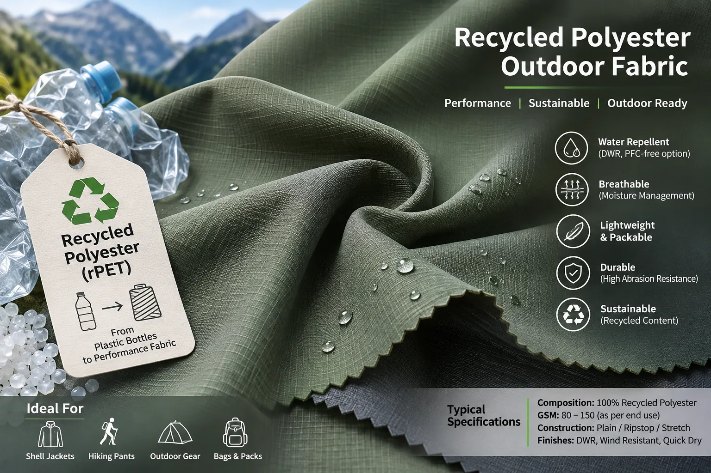

Recycled polyester fabrics from India
Recycled polyester wovens for brands that want lower-impact fabrics without giving up performance, sourced from Indian mills that can document their recycled content.

The range
| GSM | Composition | End use |
|---|---|---|
| 80–100 GSM | 100% Recycled Polyester | Light shells, gilets |
| 100–160 GSM | 100% Recycled Polyester | Activewear jackets, hiking wear, versatile bottoms |
Documentation you can rely on
We never call a fabric sustainable unless the mill can document it. With each quotation we share GRS transaction certificates, OEKO-TEX certificates and fibre-to-fabric traceability where the mill can provide them.
Finishes
Moisture management and anti-odour for activewear and hiking wear, and fluorine-free C0 DWR for jackets and light shells.
Also available
Recycled nylon at 130 GSM for eco outerwear and anoraks, and recycled fleece and insulation for layering. See our other fabric pages below.
Request specifications and pricing
Tell us the fabric, GSM, finish and end use. We share the spec sheet, test reports and a physical swatch.
Send a fabric enquiryDownload the collection (PDF)